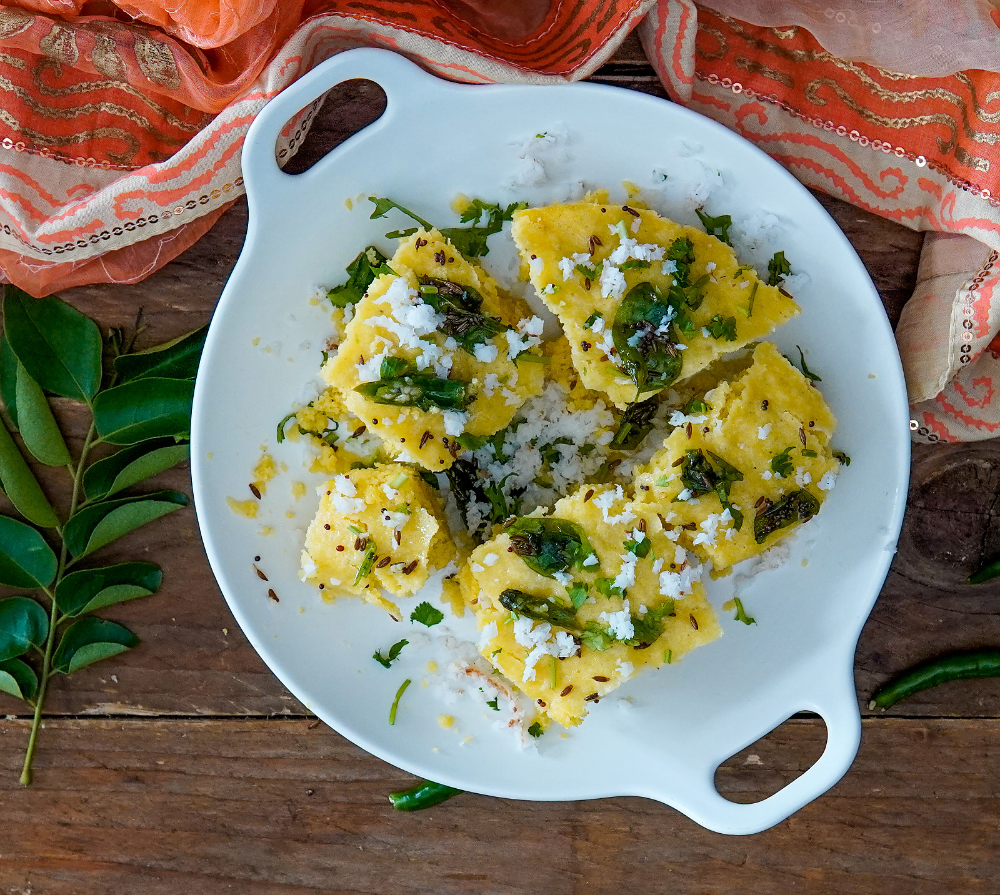

Instant Khaman Dhokla Recipe
|  | If you love Khaman Dhokla, here is a simple and delicious recipe that takes only 20 minutes to make. The Dhokla is packed with flavours from gram flour, ginger and green chillies along with a sweet and tangy tadka. Serve it along with green chutney and Adrak chai as an evening snack.
Read More... |
Ingridents |